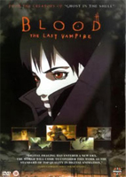
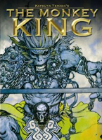

World Of The Psyche DiverThe Psyche Diver SeriesDemon Hunters is everything we love about Baku Yumemakura’s writing: pulpy violence and intense sexuality; a fantasy world filled with sex hungry, blood drinking, kung-fu fighting monks, incredible battles, and a man that kills a bear with his hands. Baku Yumemakura’s works are defined by a reverie for feeling: the experience of love, violence, anger, empathy and yearning–the feel of a freshly opened wound. Baku Yumemakura is a master of intensity. Demon Hunters: Desires of the Flesh is a book that Bikoo fought hard to release. We fell in love with the balance of the title: the violence and sexuality is palpable, but never reaches the level of exploitation. Underneath the blindingly fast pace is a deep base historical foundation. The history of Kukai (Kobo Daishi), the different sects of Buddhism, different martial arts styles, the underground culture, and fantastic battles are the things that excite us. Cover IllustrationThe cover illustration for Demon Hunters: Desires Of The Flesh was created by the renowkn artist Katsuya Terada. Katsuya Terada is probably best known in the United States as the character-designer for the animated film Blood: The Last Vampire. He has also done work related to American comics, such as Iron Man and Hellboy (one of his illustrations was used for an official statuette of Hellboy). He was in charge of the book cover and illustrations for the Kimaira series written by Baku Yumemakura, and was in charge of cover design and illustrations for Garouden, Shin Majugari, and Yamigarishi as well. While principally know for his cover and character designs, Terada-san has produced the manga series Saiyukiden Daienou (Monkey King).
KūkaiKūkai (空海), also known posthumously as Kōbō-Daishi (弘法大師 The Grand Master Who Propagated the Buddhist Teaching?), 774–835, was a Japanese monk, civil servant, scholar, poet, and artist, founder of the Shingon or "True Word" school of Buddhism. Shingon followers usually refer to him by the honorific titles of O-Daishi-sama (お大師様) and Henjō-Kongō (遍照金剛). Kūkai is famous as a calligrapher and engineer. Among the many achievements attributed to him is the invention of the kana, the syllabary in which, in combination with Chinese characters (kanji) the Japanese language is written, a claim which is no longer taken seriously in scholarly circles, despite its persistence in popular belief. Also according to tradition, the Iroha, which uses every phonetic kana syllable just once and is one of the most famous poems in Japanese, is attributed to him but again, this is popular belief and nowhere attested to. His religious writings, some fifty works, expound the tantric Buddhist Shingon doctrine.
|